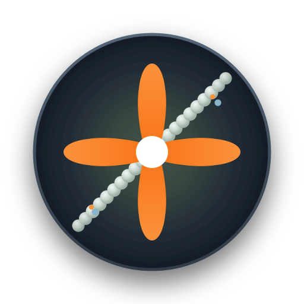
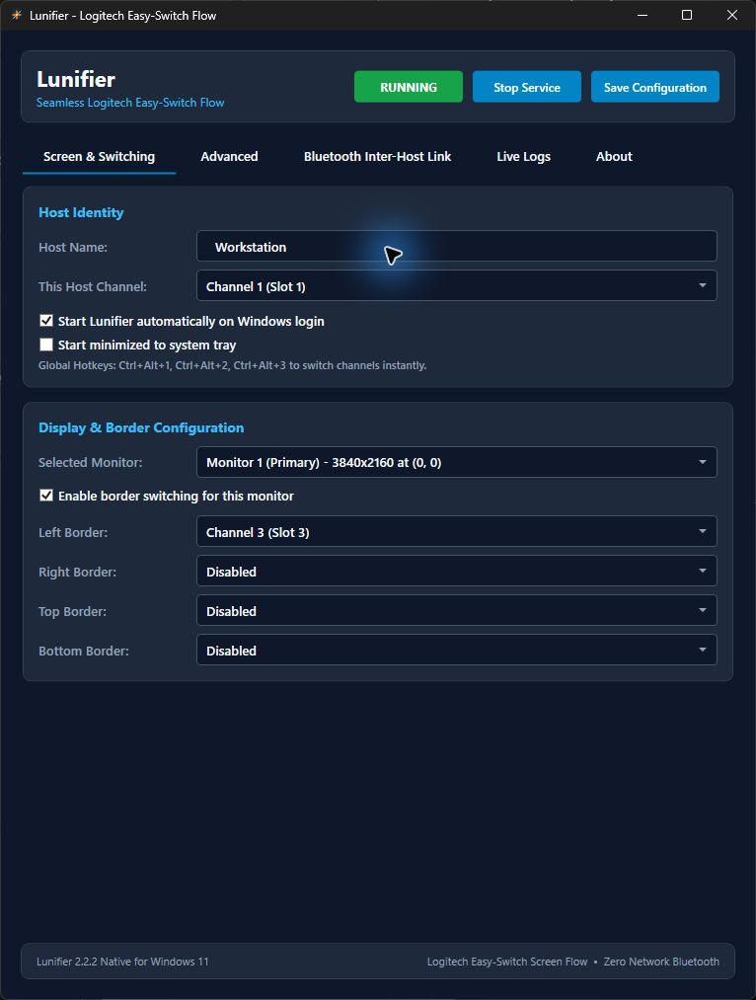
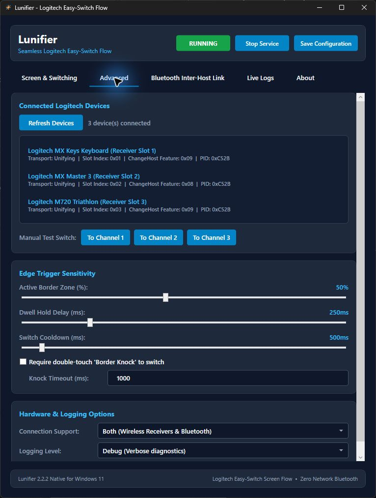
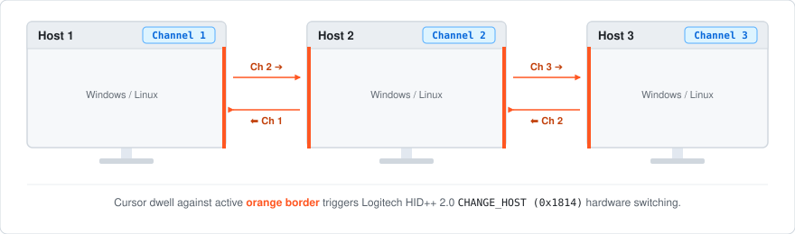

Pick an edge for each computer
Choose which computer sits beyond each screen edge by assigning its Easy-Switch channel: 1, 2, or 3.

LunifierWindows + Linux · Logitech Easy-Switch
Move your mouse to the edge of the screen to switch your Logitech keyboard and mouse to another computer. Lunifier uses their Easy-Switch channels, so your computers don’t need to share a Wi-Fi or LAN connection.
Pair your Logitech Easy-Switch devices with each computer before you start.

Choose which computer sits beyond each screen edge by assigning its Easy-Switch channel: 1, 2, or 3.
Switch from a screen edge, a keyboard shortcut, or the tray menu. Adjust how long to wait at an edge and between switches to avoid switching by accident.
Each computer can switch the devices on its own. If you also want to align the cursor position or share text from the clipboard, you can turn on the optional Bluetooth link.
Get started
Windows 11 or a supported Linux desktop (the native Linux UI targets Ubuntu 24.04+) for each host, compatible Logitech Easy-Switch peripherals, and Bluetooth, Unifying, or Logi Bolt connections supported by your devices. Pair the devices with every host before configuring Lunifier.
Your devices need to support HID++ Easy-Switch commands. The optional Bluetooth link is off by default. Lunifier is an independent project and isn’t affiliated with Logitech.
Inside the app

How it works

Each computer has its own Easy-Switch channel. Move to a highlighted edge to switch to the next computer. On a small screen, scroll the diagram sideways to see all three.
Packages & updates
Download a Debian package from Releases, or use the APT repository for updates:
curl -fsSL https://silviuk.github.io/Lunifier/install.sh | sudo bashThis command downloads and runs the installer with administrator privileges. Read install.sh first. This site also hosts the APT packages and update metadata.
Made by Silviu Vlasceanu
If Lunifier is useful to you, you can leave a tip on Ko-fi. Thanks for supporting my work. Bug reports and contributions help too.